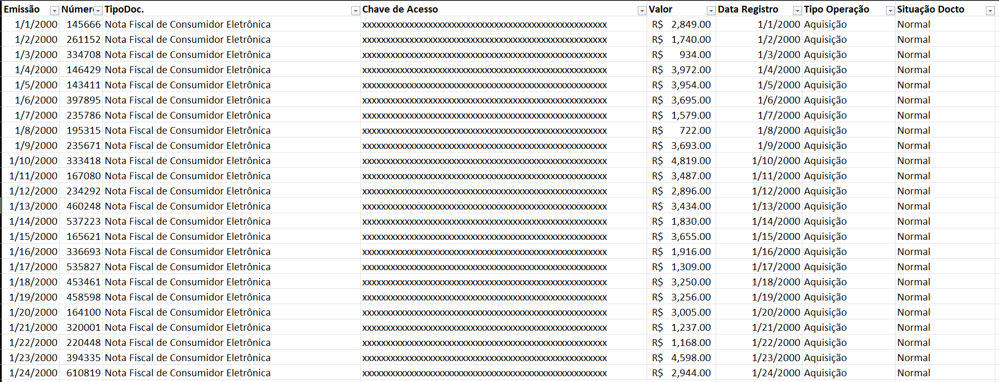

library(tidyverse)
dados <- readxl::read_excel("Nota Fiscal Gaúcha.xlsx") |>
janitor::clean_names() |>
mutate(chave = chave_de_acesso |> str_remove_all(pattern = "\\s")) |>
select(chave)
write.csv(x = dados, file = "notas/para_auto.csv")Web scraping Nota Fiscal Gaúcha
R
python
Web scraping
Automatizando o download de notas para consumidor final e a extração de dados.
Introdução
Você já se perguntou quanto gastou no mercado? E quais os itens que mais comprou? Bom, se você disse que não, acho melhor começar a pensar, e se você disse que sim, mas não sabe como fazer para buscar esses dados, eu tenho uma boa notícia!
Neste texto, descrevo como utilizei o Python na criação de um código que automatizou o download das minhas notas fiscais pessoais (NFC: Nota Fiscal de Consumidor). Deixo claro que o código é destinado ao uso pessoal e doméstico. Minha intenção é apenas o controle de gastos financeiros (e outras brincadeiras com dados).
O exemplo que utilizo aqui é para o site Nota Fiscal Gaúcha e serve apenas para quem utiliza o “benefício”. Fica obvio que é necessário colocar o CPF em todas as compras né.
Antes de começar a codificar, é necessário baixar o webdriver, uma ferramenta para testes de automação que oferece uma série de recursos para utilizar o navegador. O webdriver a ser baixado depende do navegador que você utiliza e da versão instalada. No meu caso, vou ensinar com o navegador da Google, o Google Chrome na versão 121.0.6167.140.
Para fazer o download do webdriver, basta acessar o link
Depois de baixado, é necessário colar o webdriver na pasta onde está o executável do Python. No meu caso, como utilizo o Anaconda, colei no diretório do Anaconda, o mesmo onde fica o Python.
Agora sim! Com isso, já é possível começar a escrever códigos.
Obtenção de dados
Antes de capturar qualquer nota, preciso saber quais notas tenho interesse. Para isso, fiz uma busca no site da Nota Fiscal Gaúcha, onde filtrei todas as notas do ano de 2023, apenas para o supermercado Carrefour. Assim, uma lista de dados foi apresentada (Figura 1), onde informações de datas, estabelecimento e código da nota são expostos. Deve ser realizado o download desse arquivo em formato Excel ou CSV (ou pdf se quiser algo mais hard). Com isso, temos os dados com a chave da NFC para realizar a captura.

Ajuste da chave de acesso
Da planilha baixada do site, apenas a coluna que contém a chave de acesso da nota fiscal é relevante. Realizei uma pequena manipulação na planilha, removendo os espaços da coluna da chave de acesso, e a salvei como arquivo CSV.
Nota
Códigos em R
Encontrando os pontos de clique
Nota
Agora serão apenas códigos em python
O procedimento que apresento aqui é baseado em um algoritmo que controla o mouse do computador, realizando cliques e movimentos programados. Como é de se esperar, é necessário fornecer as coordenadas para guiar os movimentos. Essa é uma tarefa manual, porém, é realizada apenas uma vez e se aplica a todas as notas (baixei mais de 200 notas).
Utilizei o MouseInfo para identificar os pontos. Após abrir o console do python (melhor fazer pelo console) é só dar os seguintes comandos:
from mouseinfo import mouseInfo
mouseInfo()O vídeo abaixo demonstra o funcionamento do MouseInfo, exibindo as marcações das coordenadas x e y à medida que o mouse é movido.
Para encontar os ponto certo basta realizar um teste com o MouseInfo aberto. Abra o site onde as notas serão baixadas e identifique os pontos onde será necessário realizar os cliques. O atalho F6 pode ser utilizado no MouseInfo para marcar as pontos x e y. Siga os passo:
1º Passo: Clique em avançar e depois em imprimir Figura 2

2º Passo: Clique em imprimir na parte do pdf Figura 3

3º Passo: Clique em salvar Figura 4

Por padrão, o Windows salva na pasta de downloads, mas é possível alterar para a pasta desejada. Basta encontrar o ponto de clique e realizar a mudança de destino.
Código para o Web scraping
Para o web scraping, eu utilizei basicamente dois pacotes: o PyAutoGUI e o Selenium. O primeiro realiza o controle do mouse e o preenchimento dos campos, enquanto o Selenium cuida de toda a parte de abrir o navegador e entrar nos links.
import pyautogui
from selenium import webdriverO próximo bloco de código mostra toda a parte de acesso ao navegador de forma autônoma. Inclui a definição do tamanho da janela, o que é importante, pois o tamanho afeta a disposição dos botões e, consequentemente, o local dos cliques. Por fim, há a parte que abre o navegador e acessa o link da nota fiscal.
options = webdriver.ChromeOptions()
navegador = webdriver.Chrome(options=options)
# Definindo o tamanho da janela do navegador
navegador.set_window_size(1280, 780)
# Link para baixar
link1 = "https://www.sefaz.rs.gov.br/NFE/NFE-NFC.aspx?chaveNFe="
# Abre o navegador com o link fornecido
navegador.get(link1)A última parte é onde ocorre o loop, ou seja, a captação nota a nota. Para isso, importei o arquivo “para_auto.csv”. Este arquivo contém a coluna com as chaves das notas fiscais. A coluna “linha” foi separada utilizando a função “split()”, considerando o separador “,”. Em seguida, foi realizada a substituição das aspas duplas com a função “replace()”. Com isso, a chave de acesso estava pronta para ser utilizada.
O novo link foi gerado considerando a primeira parte do link do site mais a parte numérica que contém a chave de acesso. A função “get()” abriu o navegador e, assim, o PyAutoGUI realizou os cliques nas coordenadas definidas.
with open("para_auto.csv","r") as arquivo:
for linha in arquivo:
# Separa a coluna linha pela ","
chave_nota = linha.split(',')[1]
# Substitui um aspa dupla por nada
chave_nota = chave_nota.replace('"', '')
# Cria um link com o site e a chave da nota
link = link1 + chave_nota
# Abre o navegador com o link novo
navegador.get(link)
# clica no avançar
pyautogui.click(78,310, duration=0.5)
# clica no 1º imprimir
pyautogui.click(1188,164, duration=0.5)
# clica no segundo imprimir
pyautogui.click(676,168, duration=0.5)
# clica no tipo de pdf
pyautogui.click(676,212, duration=0.5)
# clica para selecionar o tipo de pdf 2
pyautogui.click(647,525, duration=0.5)
# clica em imprimir final pdf
pyautogui.click(175,395, duration=0.5)
# Coloca o número da nota como nome do arquivo
pyautogui.write(chave_nota)
# Clica em salvar
pyautogui.click(553,465, duration=0.5)
pyautogui.click(767,35, duration=0.5)
# Fecha o navegador
navegador.close()Resultado
O vídeo exibe o “robô” em ação, realizando a impressão e salvando automaticamente cada uma das notas. Na minha análise, as 205 notas que obtive foram processadas em quase 21 minutos, o que equivale a ~6 segundos por nota (Um computador melhor fará em menos tempo). E você, ocupado com diversas tarefas, conseguiria realizar isso de maneira mais rápida? Mesmo ao atingir a nota de número 100 e perceber que ainda falta mais da metade. Se acha que não, a resposta para isso é simples: programação!
E agora, o que fazer com essas notas? Começar a extrair os dados manualmente? Pagar alguém para fazer? Excluir do computador e dar um ponto final?
A resposta óbvia é sim, dar um ponto final e excluir. No entanto, se ainda assim você deseja extrair informações dos seus dados, eu aconselho a conferir um próximo post (no futuro), no qual explico o que fazer com as notas.
Nota
Os códigos apresentados foram produzidos sem critérios de qualidade. Melhorias ainda podem ser feitas.